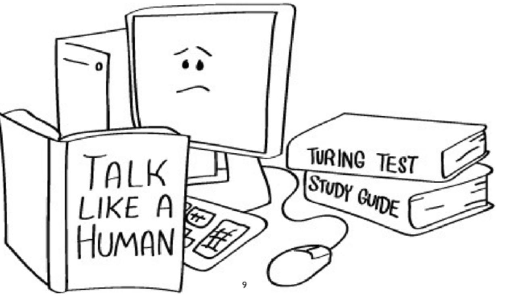
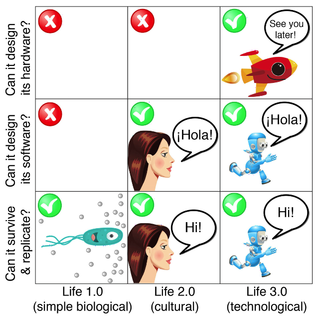

Caractéristiques IAG
Test de Turing
En 1950, Alan Turing propose un test pour déterminer si une machine fait montre d’intelligence.
Le jeu de l’imitation consiste à mettre au point une machine impossible à distinguer d’un être humain. Précisément, Turing suggérait qu’un juge J échange des messages dactylographiés avec, d’une part, un être humain H et, d’autre part, une machine M, ces messages pouvant porter sur toutes sortes de sujets. Le juge J ne sait pas lequel de ses deux interlocuteurs (qu’il connaît sous les noms A et B) est la machine M et lequel est l’humain H. Après une série d’échanges, le juge J doit deviner qui est la machine et qui est l’être humain. Turing pensait que si un jour nous réussissons à mettre au point des machines rendant impossible l’identification correcte (c’est-à-dire conduisant le juge J à un taux de mauvaise identification de 50 % identique à ce que donnerait une réponse au hasard), alors nous pourrons affirmer avoir conçu.

Il faut mesurer à quel point réaliser un programme qui passe le test de Turing est difficile. Mettons-nous dans la peau du juge J dialoguant, par le biais d’un terminal d’ordinateur, avec les deux interlocuteurs A et B. Une première idée, pour reconnaître la machine, consiste à poser une question du type « quelle est la valeur de 429 à la puissance 3 ? ». Si A répond 78953589 au bout d’une seconde et que B refuse de répondre, ou attend trois minutes pour proposer un résultat, il ne fera pas de doute que A est la machine et B l’humain. Cependant, les spécialistes qui conçoivent les programmes pour passer le test de Turing ne sont pas idiots et ils prévoient cette ruse grossière. Leur programme, bien que capable sans mal de mener le calcul de 4293 en une fraction de seconde, refusera de répondre ou demandera dix minutes avant de fournir un résultat, ou même proposera une réponse erronée.
Les 3 niveaux de Life
L'évolution de la vie sur Terre prendra-t-elle une autre forme avec l'arrivée d'une IA superintelligente ?

Les 3 types de Life :
Caractéristiques IA générale
Une IA générale est une IA capable de faire les mêmes tâches que l’Homme, capable de se répliquer et qui ne se contente pas de répéter une seule tâche (IA faible).
Les autres Caractéristiques d'une IA générale sont :
Avoir sa propre structure de mémoire et de gestion des idées
Devrait être en mesure de corriger ses croyances ou sa structure de connaissances antérieures en fonction de nouvelles informations
Capable de supprimer ses croyances antérieures s'il a été prouvé que les anciennes connaissances étaient erronées
Efficace pour structurer les nouvelles connaissances afin qu'elles puissent représenter sa structure mémoire existante
Capable de lire des vidéos, des documents audio, des textes et autres formes et de créer une représentation des connaissances et modifier ses connaissances sans apprendre sous surveillance etc.
Rapidement capable de récupérer les connaissances de la mémoire (avec les connaissances associées pertinentes) et de les utiliser dans des situations qui lui sont assignées et de prendre des retours d'information pour mettre à jour sa mémoire existante Graphique central des connaissances / Dans la mémoire intégrée Connaissance des documents de la vidéo Connaissance de l'audio Agir avec la connaissance et mettre à jour le graphique selon l'expérience Vue à niveau élevé du système de renseignements généraux artificiels